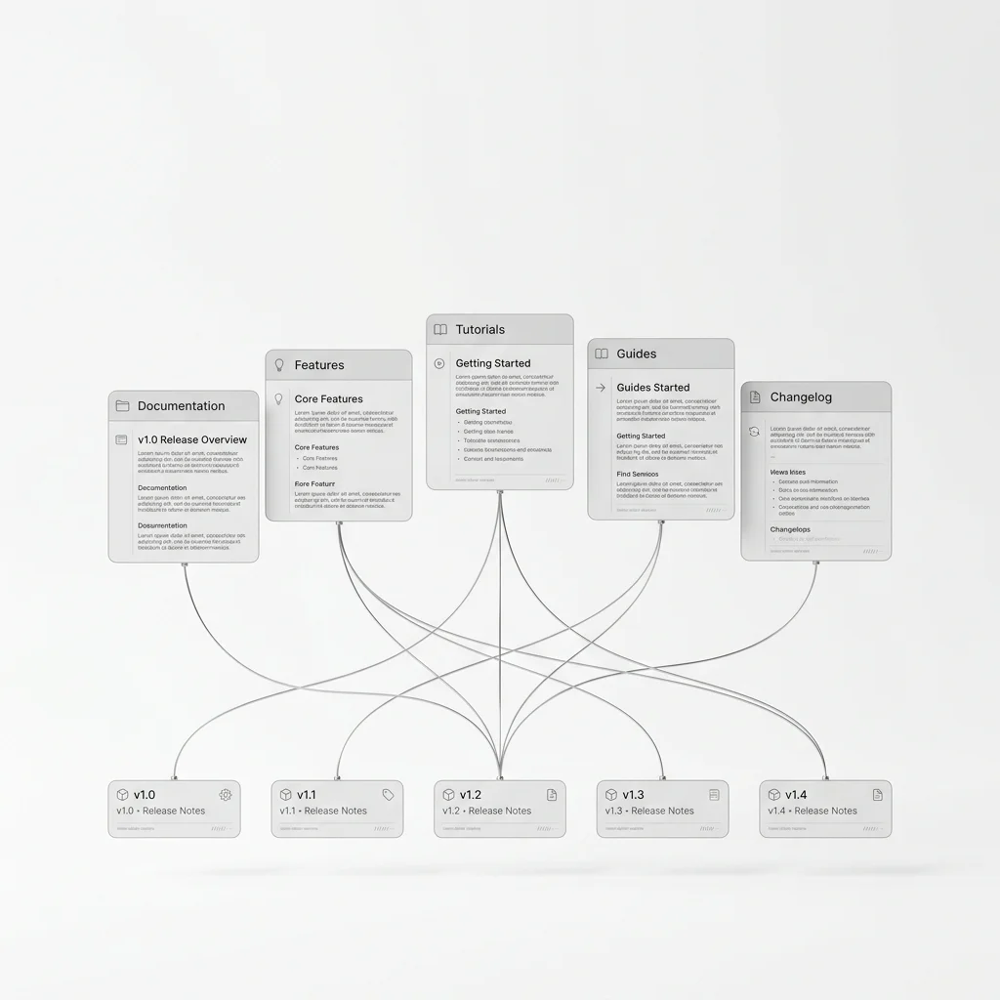

Blog
Draft index. These articles have not been written. Titles and
summaries are here to commission against; every link points at #.
Engineering. Research. Product.
This is where we write down how Arble works and why it was built that way: architectural decisions and the constraints behind them, research into memory and planning, notes on what a release changed, and the occasional account of something that did not work.
It is not an announcements feed. Product news lives in the changelog, where it is easier to scan. An article belongs here when there is something to teach — a mechanism worth explaining, a trade-off worth defending, or a mistake worth documenting so someone else avoids it.
Featured
Engineering
Building an AI operating system: what runs on the device and why
An assistant is a chat window with integrations bolted to the side. An operating system decides which tools exist, what they may reach, what survives the end of a conversation and which model answers a given request. This piece walks the whole runtime — registry, permission gate, memory, router — and explains why all four sit on the device rather than behind an API, including the parts of that decision that cost us performance.
Latest
- Research Memory beyond the context window A context window is working memory, not storage. What retrieval looks like when the unit is a fact with provenance rather than a chunk of text.
- Engineering Typing 579 tools without slowing the loop Registry lookup was 400 ms at the ninety-ninth percentile once workspaces passed a few hundred tools. What we changed, and why the obvious cache was the wrong fix.
- Security Designing the permission gate Every write stops to ask. The hard part is not the prompt — it is deciding what counts as one decision, and how to avoid training people to approve without reading.
- AI How tool calling actually works From JSON schema to a validated call and back into the transcript, including the failure modes that only appear once a model can call forty things.
- Engineering The architecture behind sessions What a session owns, what it borrows, and how compaction preserves the instructions that set it up rather than the small talk that followed.
- Product Introducing the Tool SDK Decorators, generated schemas, streaming results and publishing, in four languages. Why the SDK generates the schema instead of asking you to write it.
- Infrastructure Coordinating agents without a queue Multi-agent work looks like a distributed system because it is one. What we borrowed from actor models, and where the analogy breaks.
- Research Why local-first matters for agents Latency is the smaller argument. The larger one is that an agent holding your keys and your context is a different trust proposition to one holding a copy.
- Engineering MCP versus native tools When to write a tool into the runtime and when to reach for a protocol server, measured on latency, typing, failure handling and who you are trusting.
- Infrastructure Observability for systems that decide A trace that stops at the HTTP boundary tells you nothing about why an agent chose a tool. Instrumenting the loop itself.
- Engineering Building desktop automation on an untrusted network Pairing, key exchange and the relay that carries ciphertext it cannot read. Plus the host-key problem we have not solved yet.
- Research Planning versus reasoning Two words used interchangeably that describe different mechanisms with different failure modes. Why conflating them produces agents that think beautifully and do nothing.
- Infrastructure Running Arble on Kubernetes Readiness against liveness, draining a node mid-run, and why additive migrations are what make a rolling upgrade possible at all.
-
Product
Inside the CLI
Designing a command surface that is pleasant to type and safe to
script — including why every command has a
--jsonmode. - Engineering Streaming responses, and what breaks at the edges Token boundaries, backpressure, and the disconnect bug that silently discarded work for two releases before we understood it.
Categories
Engineering
How a part of Arble is built, and the constraints that shaped it. These are the pieces that go past the interface into the mechanism: how the registry indexes tools, what a session actually owns, why compaction summarises the middle of a conversation rather than the start. If an article in this category does not contain at least one decision that could reasonably have gone the other way, it has not earned the category.
Research
Open questions in memory, planning and evaluation, and what we have measured against them. Research here is applied — the test of a result is whether it changed something in the product, and articles say plainly when it did not. Negative results are published, because the field has enough papers reporting only the runs that worked.
Product
What shipped, explained past the changelog entry. The changelog tells you a capability exists and what to run; a product article tells you why it exists in that shape, what was considered and rejected, and where it will not help you. Roughly one per significant release.
Infrastructure
Running Arble in production: deployment topologies, capacity, upgrade mechanics, observability and failure. Written for the person on call. Incident write-ups appear here when the lesson generalises beyond our own infrastructure.
Security
The trust boundary, credential handling, the permission model, and the things we deliberately cannot do. Security articles here name limitations as directly as capabilities — the Security documentation lists what is unimplemented, and articles in this category explain why a gap is still open rather than pretending it is closed.
AI
Models, tool calling, context and the mechanics underneath them. This is the category for explaining how something actually works when the popular explanation is wrong or vague — what a schema does to a model's output distribution, what a reasoning trace is and is not evidence of.
Design
Interface decisions, and the reasoning behind restraint. Most design writing here is about what was removed: the status badge that reported nothing actionable, the second confirmation that trained people to click through, the colour that carried meaning nobody could learn.
Developer Experience
The CLI, the SDKs, the API and the documentation around them. A command surface is a user interface with different constraints, and this category treats it that way — error messages, defaults, and what happens when someone pipes the output somewhere we did not anticipate.
Release Notes
Deep dives on a release where the changelog entry is not enough. Reserved for releases that changed a model rather than adding a capability — per-tool permissions, or the move from disconnect-cancels-run to explicit cancellation.
Playbook
Chapters from the Playbook, published as standalone reading. The Playbook teaches the concepts underneath AI systems using Arble as an example rather than a subject; chapters that stand alone well are surfaced here.
Start here
Three reading paths, depending on what you came for. Each is ordered, and each assumes the one before it.
If you are evaluating Arble
Read Building an AI operating system for the architecture, then Why permissions matter for the control model, then Why local-first matters for agents for the trust argument. About an hour. You will finish knowing what the product is and what it refuses to do.
If you are building on Arble
Start with How tool calling actually works, then Designing native tools, then MCP versus native tools to decide where your integration belongs. Follow with Introducing the Tool SDK and keep the Tool SDK reference open beside it.
If you are running Arble in production
Running Arble on Kubernetes first, then Observability for systems that decide, then Building reliable AI workflows. The Self-hosting guide is the reference these three assume.
Series
Articles that continue rather than stand alone. A series is not a numbered list of related posts — each one assumes the previous, and the last one in a series is usually the one worth reading twice.
Building Arble 9 articles
The runtime, component by component, in the order we built them: the loop, the registry, the permission gate, memory, the router, sync. Each article ends where the next begins, so reading the series through is a reasonable substitute for reading the architecture documentation. It is also the honest record of what we built in the wrong order and had to revisit — memory came before we understood retrieval, and it shows.
AI Operating Systems 5 articles
What the category means, and what it takes to earn the name. An assistant with integrations is not an operating system; the difference is whether tools, permissions, memory and routing are one system with one set of rules, or four products wearing the same colour. The series argues that position, including the parts of it that are contestable.
Architecture Notes 12 articles
Short pieces — usually under a thousand words — on a single decision and the alternatives rejected. Why the registry is indexed at load rather than cached lazily. Why permission decisions cache per session but not per workspace. Why namespacing tools by server beat first-writer-wins.
Research Papers Explained 7 articles
A paper we read closely, summarised for engineers, followed by what it changed in the product. The second half is the point: a paper that changed nothing is still worth explaining, and the article says so rather than manufacturing relevance.
Developer Diaries 6 articles
One feature from first sketch to release, including the dead ends. These are written during the work rather than reconstructed afterwards, which is why they contain decisions that turned out to be wrong and are left in.
Release Deep Dives 4 articles
One release, examined properly. Reserved for releases that changed a model rather than adding a capability — the move to per-tool permissions, and the change from disconnect-cancels-run to explicit cancellation, both of which needed more explanation than a changelog entry allows.
Infrastructure Journal 8 articles
Incidents, capacity work and what production taught us. Incident write-ups follow the same structure every time: what happened, what the customer saw, the timeline, the contributing causes, and what changed afterwards. No individual is named, and no cause is recorded as human error — if a person could make that mistake, the system permitted it.
Topics
- Memory
- Agents
- Planning
- Reasoning
- Tool SDK
- MCP
- Desktop automation
- Computer use
- CLI
- API
- Self-hosting
- Security
- Performance
- Architecture
Editor’s picks
Evergreen pieces that have not dated. Each entry says who it is for, because a recommendation without a reader in mind is just a list.
How memory works. What is stored, what is retrieved, and what is deliberately forgotten. The article most often sent to people who assume memory means a bigger context window. For anyone deciding what to trust an agent to remember.
Why permissions matter. The argument for stopping to ask, written for people who find it annoying — which is the right audience, because they are the ones who will switch it off. Pairs with the Permissions reference.
From prompt to execution. One request traced through every stage of the runtime, with the intermediate state shown at each boundary. The fastest way to understand the system if you learn by following a single path rather than reading a map.
Designing native tools. What makes a tool easy for a model to call correctly: parameter naming, the cost of optional arguments, and why a good description does more work than a good schema. Required reading before publishing to a shared registry.
Building reliable AI workflows. Retries, idempotency and knowing where to resume. Written after we shipped pause and resume and discovered how many steps were not safe to run twice.
Streaming responses explained. What the transport guarantees and what it does not. Contains the disconnect bug in full, because it is a good example of a failure that looked like a network problem for two releases.
The evolution of MCP. How the protocol changed what a tool ecosystem could look like, and what it deliberately leaves to the host — including authorisation, which is why per-tool permissions were ours to design.
Building production agents. The difference between a demo and something you leave running: idempotency, budget, failure handling, and knowing what the agent should do when it is uncertain.
Context engineering in practice. Budgeting a finite window across instructions, history and tool results, with the arithmetic worked through on a real session.
Evaluating agents that act. Why benchmarks that score text miss most of what matters, and what we measure instead. The companion to the Evaluation research piece, written for practitioners rather than researchers.
Research
Longer work, usually with something measured in it. Applied rather than theoretical: each of these exists because a product decision was blocked on not knowing the answer.
Reasoning systems
What a reasoning trace is good for, and what it cannot tell you. A trace is generated text about a decision, not a recording of one, and treating it as an audit log produces false confidence. We look at where traces correlate with correctness, where they do not, and what to log instead when you need to know why an agent did something.
Agent planning
Plan-then-act against act-then-replan, measured on tasks that fail halfway through. Upfront planning reads better and recovers worse. The interesting result is the middle: planning to the first irreversible step, then replanning, beat both on our task set.
Memory compression
Summarising a session without losing what set it up. Truncating from the start is the cheapest strategy and the worst one, because the instructions that constrain the whole session live there. What we compact, what we pin, and how much context a summary actually costs to reconstruct.
Execution graphs
Representing a run as a graph rather than a transcript, and what that buys for resumption. If a workflow knows which steps completed and what each produced, a restart resumes instead of replaying — which is what makes pause and resume across a process restart possible at all.
Context engineering
Allocating a finite window between instructions, history and tool results. Tool results are the variable nobody budgets for: a single large result can evict the instructions that made the call sensible. Budgeting by token rather than by character, and degrading predictably when the budget is exceeded.
Local inference
Where on-device models are genuinely sufficient, with numbers. Classification, routing, extraction and short summarisation hold up well; multi-step tool use does not, yet. The honest version of the local-first argument requires saying which half is which.
Evaluation
Measuring agents by what they changed rather than what they said. Text benchmarks score the transcript, which is the least consequential artefact an agent produces. What a state-based evaluation looks like, and why it is so much more expensive to build.
Computer use
Operating an interface built for a human, and why it stays hard. Screen understanding has improved faster than the reliability of the actions taken from it; the failure mode is no longer misreading the screen but misjudging what a click will do.
Recent product updates

| Shipped | Read the long version |
|---|---|
| Tool SDK | Introducing the Tool SDK |
| CLI | Inside the CLI |
| API reference | Designing an API for runs that stream |
| Memory encryption | Project-scoped keys, and what they protect |
| Desktop control | Building desktop automation on an untrusted network |
| MCP support | MCP versus native tools |
| Self-hosting | Running Arble on Kubernetes |
How we build
Seven positions that decide most arguments before they start. They are listed here because they explain the shape of decisions elsewhere on this blog, and because a position you cannot state is one you will quietly abandon under deadline.
Build simple systems. A system you can hold in your head is one you can debug at three in the morning. The practical test is whether a new engineer can predict what happens next without reading the implementation. When the answer is no, the design is wrong even if the code is correct.
Document everything. Undocumented behaviour is not a feature, it is a rumour. Anything a user can observe is documented, including the parts that are unfinished — the threat model lists what is out of scope, and the Security page names controls that do not exist yet.
Design for humans. The person approving a tool call is not a formality in the loop; they are the point of it. This constrains interface work more than it sounds: a prompt that appears too often trains people to approve without reading, which is worse than no prompt because it manufactures consent.
Own your infrastructure. If a capability requires our servers to be up, it is a weaker capability. The registry, the permission gate and memory all work with no network. That constraint has cost us features, and we have kept it anyway.
Respect permissions. An agent reaches exactly as far as it was allowed and no further, including when further would obviously be helpful. The moment an agent is permitted to decide its own scope, the permission model is decoration.
Prefer local execution. Data leaves the device when there is a reason, not by default. Where it must leave — to a model provider, to an MCP server — the interface says so before it happens rather than in a policy nobody opens.
Measure before optimising. Every performance claim on this blog has a number and a method behind it, or it does not appear. The registry work in 1.8 is quoted as 400 ms to under 20 ms because those were measured on a stated workload, not estimated from the shape of the fix.
Who writes here
| Team | Writes about |
|---|---|
| Engineering | The runtime, the registry, sessions and the parts that were harder than expected. |
| Research | Memory, planning, evaluation and the papers that changed our minds. |
| Infrastructure | Deployment, scale, observability and incidents worth writing up. |
| Developer Experience | The CLI, the SDKs, the API and the documentation around them. |
| Design | Interface decisions, and the reasoning behind what was left out. |
Subscribe
- RSS. blog.xml — full text, no tracking.
- Email. New articles only, roughly twice a month.
- GitHub. Releases and source.
- Changelog. Every release, in less time.
- Documentation. The reference, when you need the answer rather than the reasoning.
- Status. Incidents and maintenance.
Archive
2026. 34 articles — the developer platform, MCP, memory encryption, desktop control.
2025. 41 articles — the core runtime, the first memory work, the permission model.
Earlier. Pre-1.0 writing, kept for the record. Some of it describes architecture we have since replaced; where that is true, the article says so at the top.
What belongs here
An article should leave the reader knowing something they did not know, and able to use it. In practice that means:
- Technical explanation. How a mechanism works, at the level of detail someone reimplementing it would need.
- Architecture. A decision, the alternatives, and the reason for the choice — including the cost.
- Research. A question, a method and a result. Negative results are welcome.
- Release deep dives. When a change deserves more than a changelog line.
- Engineering stories. Incidents, regressions and the things we got wrong, written without a redemption arc.
What does not belong: launch announcements without mechanism, competitor comparisons, speculation about the field, and anything whose argument is that we are excited. If a piece could be written by someone who had not read the source, it is not for this blog.
How we write
Six rules, applied in review.
- Lead with the mechanism. The first paragraph says what the thing does. Context comes after, once the reader knows what it is context for.
- Numbers or nothing. A performance claim carries the measurement and the workload it was measured on. "Significantly faster" is rejected in review.
- Name the trade-off. Every design decision cost something. An article that presents a choice as free has left out the interesting half.
- Show the failure. Where we got it wrong, the article says so in the same voice it uses for everything else, without an apology and without a redemption arc.
- One idea per paragraph. If a paragraph needs a semicolon to hold together, it is two paragraphs.
- Link, do not restate. Reference documentation is the source of truth for how something works today. An article that duplicates it will disagree with it within two releases.
Articles are reviewed by someone who did not build the thing being described. That reviewer's job is to find the sentence that only makes sense if you already know the answer.
Corrections
When an article is wrong, it is corrected in place with a note at the top saying what changed and when. Articles describing architecture we have since replaced carry a banner rather than being deleted — the reasoning at the time is usually still worth reading, and quietly removing it would misrepresent the record.